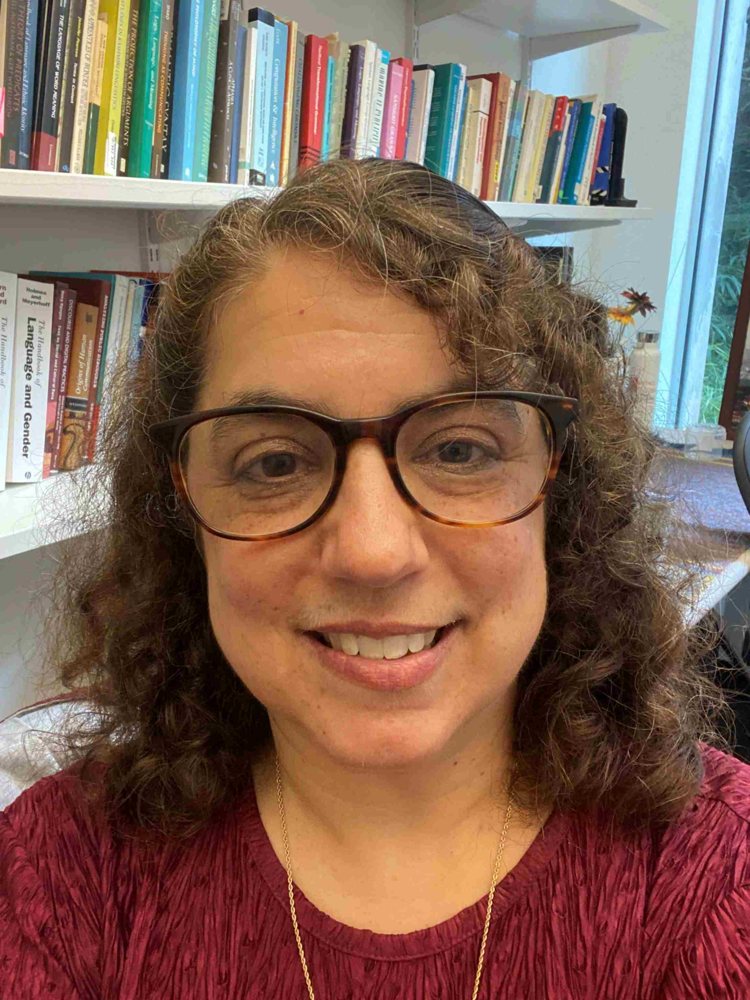

Carolyn Penstein Rosé
Kavcic-Moura Professor of Language Technologies and Human-Computer Interaction
Carnegie Mellon University
Language Technologies Institute and Human-Computer Interaction Institute
Gates-Hillman Center 5515
5000 Forbes Ave.
Pittsburgh, PA 15213-3891
Email: cprose@cs.cmu.edu
Phone: +1 (412) 268-7130
Fax: +1 (412) 268-6298
Welcome to my webpage!
I have the privilege of directing the Teledia lab, a large, interdisciplinary lab involving PhD, Masters, and undergraduate students, staff, and affiliates researching interactive and explainable Sociotechnical Artificial Intelligence from a highly interdisciplinary perspective. Our team is highly collaborative, offering students many opportunities to explore new horizons as well as expand their impact by developing and then contributing their own unique expertise and research creations to numerous synergistic efforts.
Teledia News
- Carolyn Rosé was selected for the Kavcic-Moura Endowed Professorship Language Technologies and Human-Computer Interaction
- Carolyn Rosé is Program Co-chair for EMNLP 2025
- Sreecharan Sankaranarayanan is scheduled to defend his dissertation in Spring 2025
- Ritam Dutt was awarded an Honorable Mention at the EMNLP 2024 GenBench workshop
- Atharva Naik was nominated for a Best Paper Award at AIED 2024
- YiQing Xie was awarded the 2024/2025 LTI Presidential Fellowship
Recent/Upcoming Invited Talks
- Keynote Speaker: 10th International Conference on Computer and Information Science and Technology, Paris, France (CIST 2025) (delivered remotely, August 2025)
- Keynote Speaker: 8th International Conference on Computational Intelligence and Data Science (ICCIDS 2025) (delivered remotely)
- Invited Speaker: Minerva Gentner Symposium “Green NLP for Understanding Complex Information”, May 21 to 23, 2024, Birlinghoven castle, Germany
- Invited Speaker: Seoul National University, Korea, Spring 2025
- Invited Panelist: Human-Centered Large Language Modeling Workshop, Annual Meeting of the Association for Computational Linguistics, Summer 2024
- Keynote Speaker: Annual Meeting of the International Educational Data Mining Society (EDM), July 16, 2024
- Invited Discussant: Symposium on “What does it mean to be literate in the time of AI? Different Perspectives on Learning and Teaching AI Literacies in K-12 Education”, Annual Meeting of the International Society of the Learning Sciences, Summer 2024
- Keynote Speaker: ODSC East Virtual Conference, April 24, 2024
- Invited Speaker: SUNY IAD Days, Institute for Artificial Intelligence and Data Science, Spring 2024
Professional Affiliations
- Past President and Inaugural Fellow of The International Society of the Learning Sciences
- IEEE Senior Member
- AAAS Leshner Leadership Fellow for Public Engagement with Science: AI Cohort
Publications
For a comprehensive list of my publications, please visit my Google Scholar Profile.